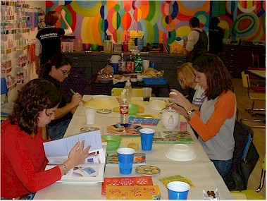
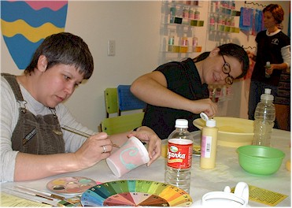
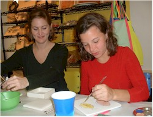
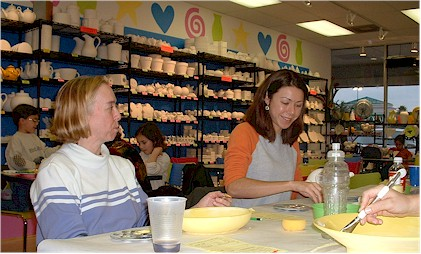
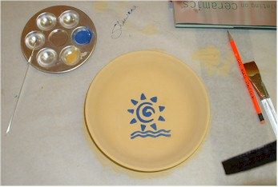
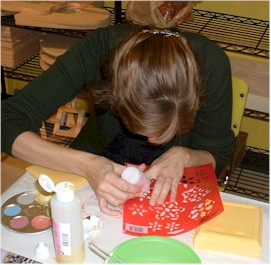
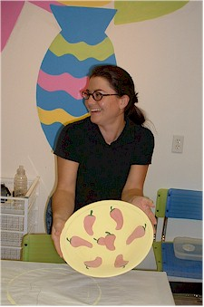
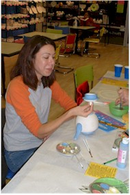
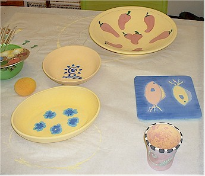
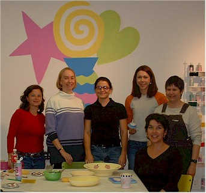

December 7, 2002
| Stacie Gibbins had a great idea for a party at
the Mad Potter. It's this cool store that lets you decorate different
pottery pieces, then they fire them for you. We had a great time
visiting and painting. I was surprised to learn how artistic my
friends are! |
|
 |
 |
| Here we are, getting started | Carlotta and Stacie, creating away |
|
 Amy is making a fish trivet for her Mom (hope she doesn't see this site before Christmas!) while Julie watches with pride and amusement. |
 |
|
Jenny, waiting for a coat of paint to dry, and Kate, still optimistic about her teapot |
|
|  |
 |
| Here's my little masterpiece. I used a stencil
and then painted inside the lines (I tried to stay inside them anyway.)
It looks much better here than it did in real life!
|
Here's Julie demonstrating the stencil
technique for her snowflake
|
|  |
 |
| Stacie showing off the very nice chili pepper bowl she made for EJ's parents | Kate, now having second thoughts about the difficulty level of teapot painting |
|  |
 |
| Here are most of our pieces on display. Breathtaking! | And here's the whole gang (minus Julie, who is still working frantically) |